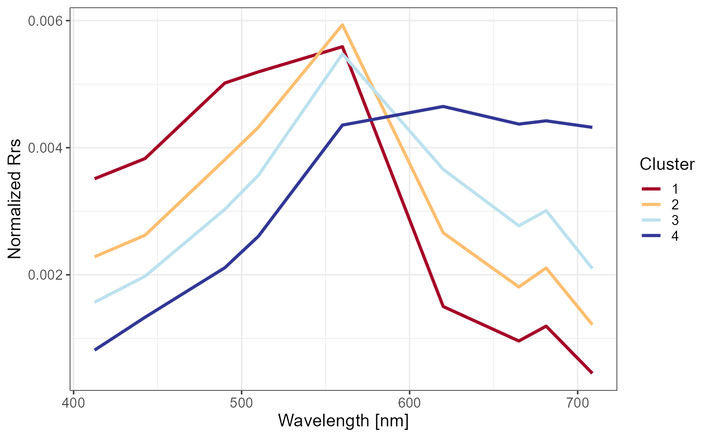

Spectra plots for a FCM.new result
plot_spec( res, show.stand = NULL, show.ribbon = FALSE, color_palette = RdYlBu(res$K), prefix = "Cluster " )
| res | The result of function FCM.new |
|---|---|
| show.stand | Whether to show the spectra on standarized scale (default as |
| show.ribbon | Whether to show the ribbon defined by sd values calculated from samples
in each cluster (default as |
| color_palette | The palette of cluster color. Default as |
| prefix | Prefix of cluster name, default as |
The result of plot_spec is a list including:
p.all.spec Spectra of all data.
p.cluster.spec Spectra of clusters.
p.group.spec.1 Spectra of groups in mode 1
p.group.spec.2 Spectra of groups in mode 2
res Result list of FCM.new
show.stand Logical value whether use standardized y-axis
Bi S, Li Y, Xu J, et al. Optical classification of inland waters based on an improved Fuzzy C-Means method[J]. Optics Express, 2019, 27(24): 34838-34856.
library(FCMm) library(ggplot2) library(magrittr) data("Nechad2015") x <- Nechad2015[,3:11] wv <- gsub("X","",names(x)) %>% as.numeric w <- sample(1:nrow(x), 100) x <- x[w, ] names(x) <- wv nb = 4 # Obtained from the vignette "Cluster a new dataset by FCMm" FD <- FuzzifierDetermination(x, wv, stand=FALSE)#> Warning: Parameter stand has been deprecated. Please use do.stand!#>